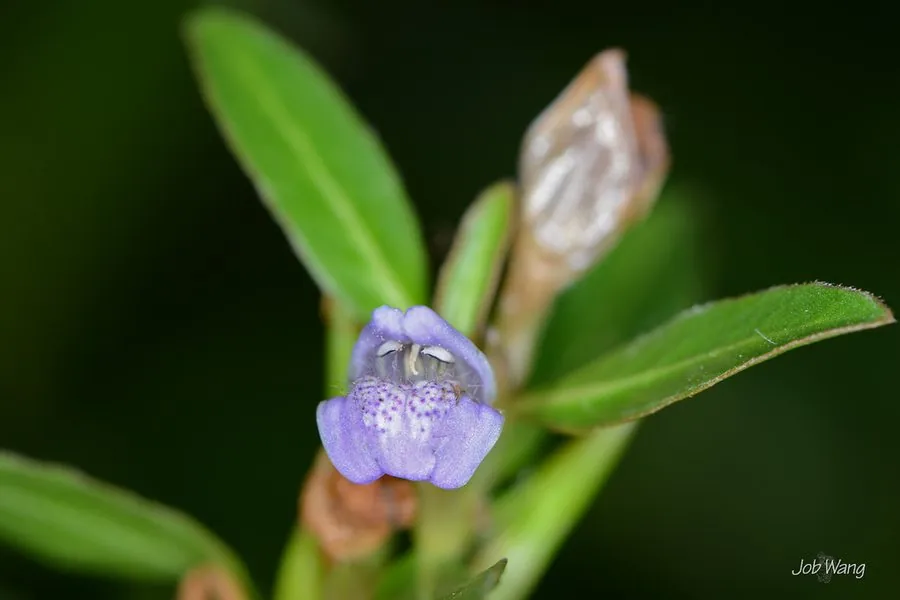

水生植物 · 植物界
水蓑衣 Hygrophila salicifolia

爵床科水蓑衣属多年生水生草本，叶片披针形、花淡紫色，生于南方水田沟渠，全草可入药，是常见湿地植物。
- 分类
- 门被子植物门纲木兰纲目唇形目科爵床科属水蓑衣属
- 栖息环境
- 池塘、沟渠、水田和湿地的浅水区
- 地理分布
- 亚洲南部，中国南方各地常见
- 保护级别
- 暂无评估
物种志
水蓑衣为爵床科水蓑衣属的多年生水生草本，株高 0.3–1 米，茎直立或下部匍匐，节上生根。叶片对生，披针形或线状披针形，长 5–12 厘米，全缘或微波状。花单生或簇生于叶腋，淡紫色或粉红色，花冠二唇形，花期夏季至秋季；果实为蒴果。
水蓑衣分布于亚洲南部的池塘、沟渠、水田和湿地，中国南方各地常见，喜温暖、阳光充足和湿润的浅水环境。它叶片披针形、花淡紫色，常成片生长在水边，全草可入药，有清热解毒、消肿之效。栽培以茎段扦插和分株繁殖为主，极易成活；在湿地水景中可作前景和岸线绿化，生长过密时需适当疏剪。
形态与习性
- 株高0.3–1 米
- 叶片披针形，对生，长 5–12 厘米
- 花期夏季至秋季，花淡紫色
- 水深浅水至湿泥地
- 光照喜充足阳光
- 繁殖茎段扦插、分株
- 主要用途全草入药，清热解毒
- 特点茎节生根，易成片生长
趣味知识
- 水蓑衣的叶片披针形，花淡紫色，常成片生长在水边。
- 它的茎节上能生根，剪一段插进湿泥就能成活。
- 水蓑衣全草可入药，有清热解毒、消肿之效。